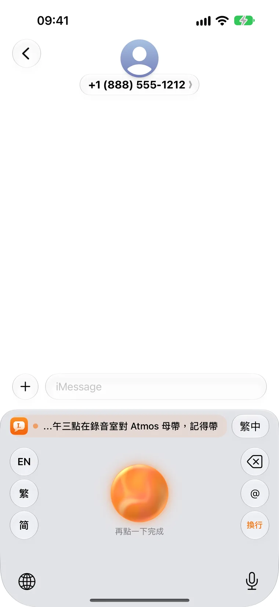
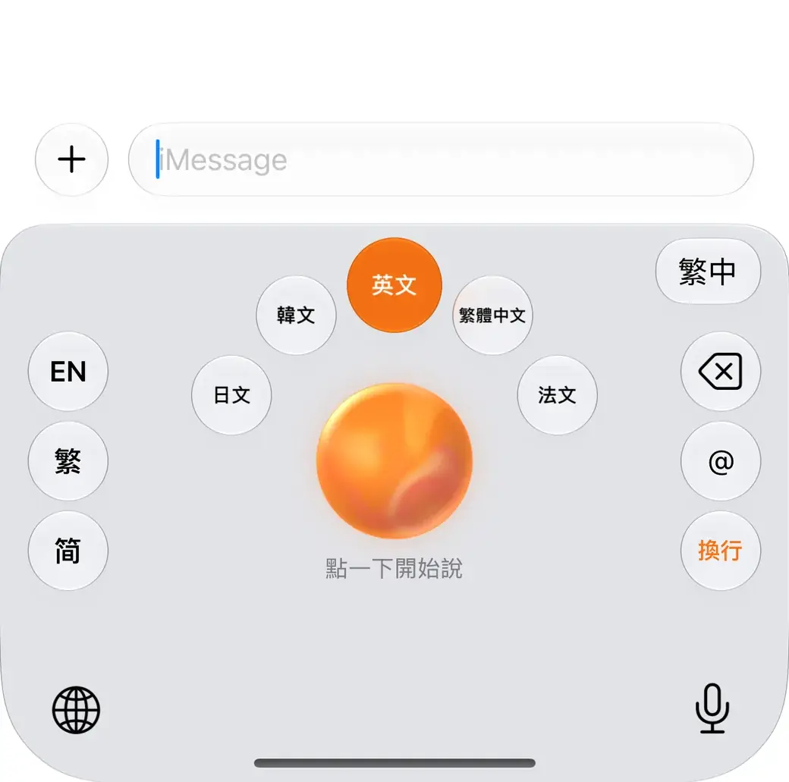
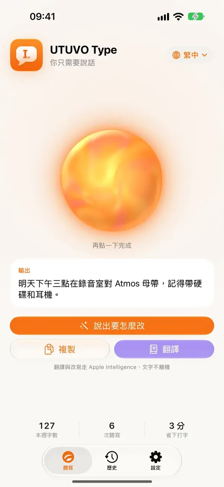
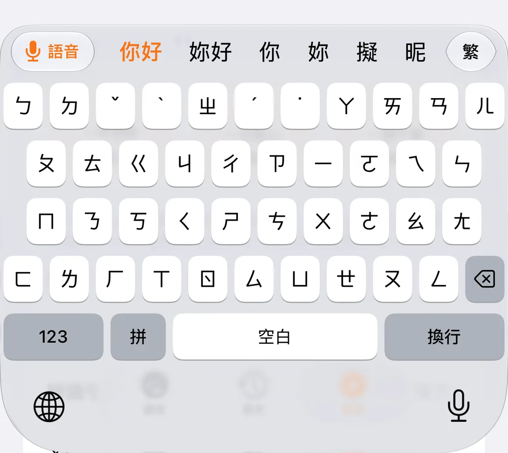
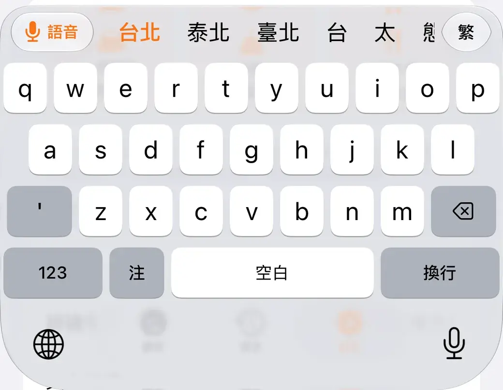
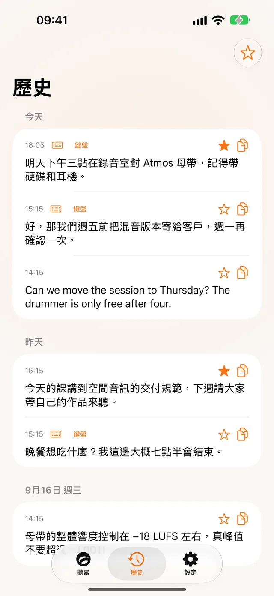
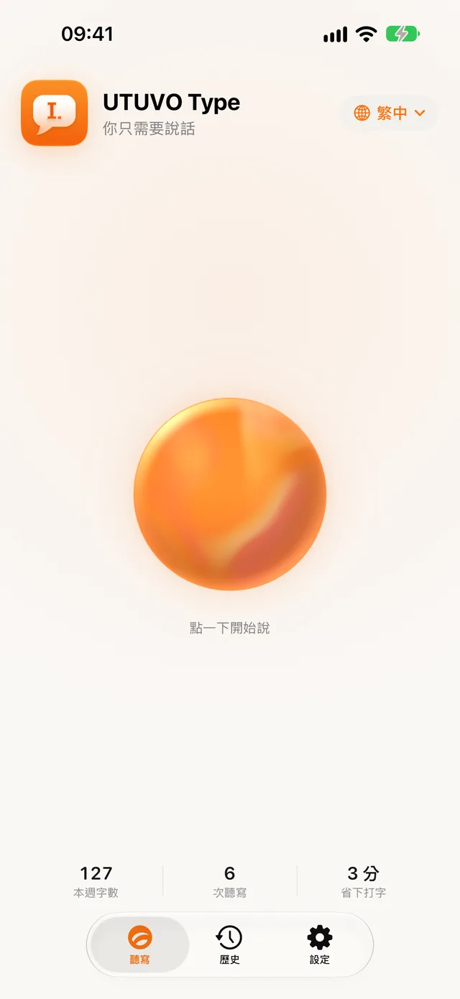
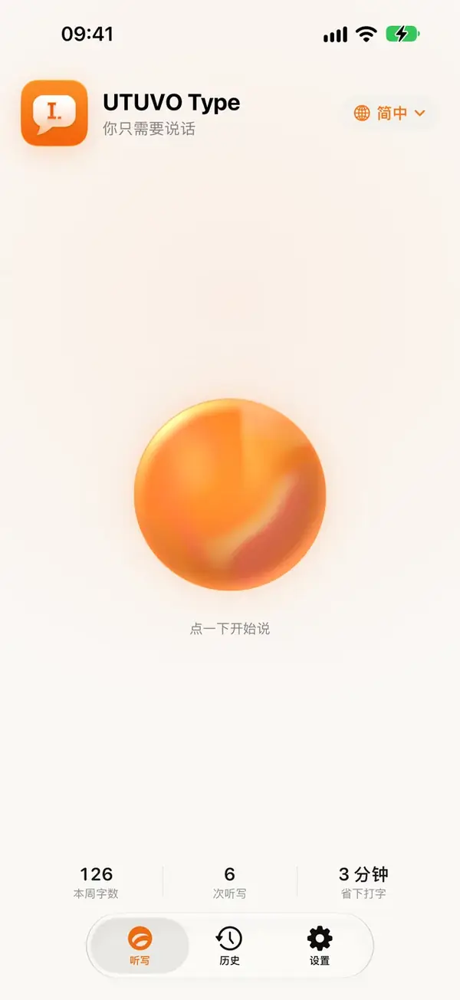
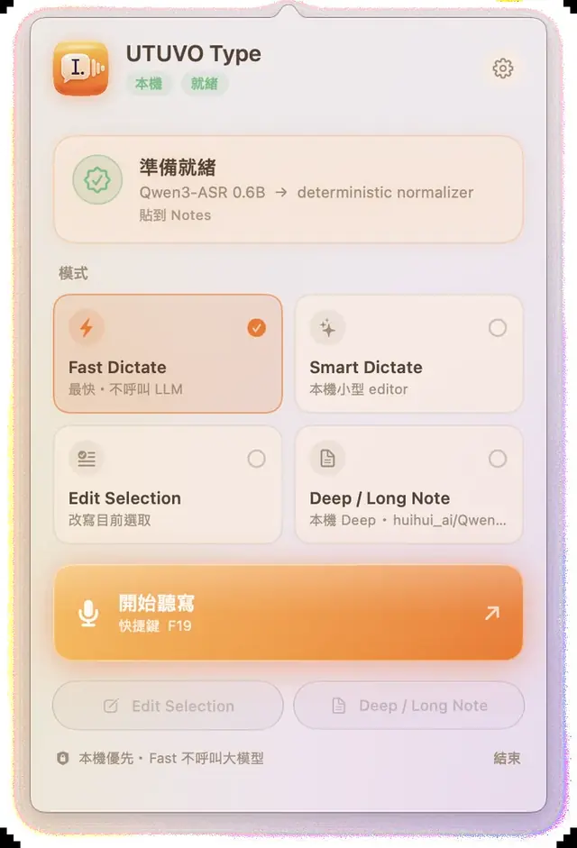

Speak.
It types.
Tap the orb on the keyboard, say what you mean, and clean text lands at your cursor — in any app. On-device first, no account, open source.

A keyboard with an orb in it.
Switch to UTUVO Type with the globe key, then talk. The orb moves with your voice; tap it again and the finished text is inserted once, where your cursor is.

Hold the orb to translate
Slide to a language and let go. Speak Chinese, get English or Japanese — pick up to five languages.

Say how to change it
Select some text and say “make it more formal” or “add the time”. The rewrite replaces the selection — with Apple Intelligence on the device, or your own cloud key.


Fix a word without leaving
EN, 繁 and 简 sit beside the orb. Correct a word with English, Zhuyin or Pinyin — Traditional or Simplified — then tap Voice to keep talking.

Everything you said, on your phone
Each dictation is kept on the device — searchable, starrable, one tap to copy. A personal dictionary teaches it the names and jargon you use.


Traditional and Simplified Chinese
The app follows your iPhone’s language: Traditional Chinese with Taiwan wording, or Simplified Chinese with mainland terms. English dictation works too.
A menu bar app for everything you write.
Transcription runs on your Mac with a local model. Cleanup is rules first, a model only when you ask.

Press the shortcut
⌥Space by default, or hold it for push-to-talk. Any key you like.Say it
A small capsule shows you're live. Esc cancels. Nothing is recorded until you start.It lands where your cursor is
Punctuation, fillers, numbers and your own dictionary — cleaned up and pasted into the app you're in.
Fast Dictate
Transcribe and normalize on-device. Instant, predictable, no LLM.
Smart Dictate
A small local editor tidies sentences. Still on your Mac.
Edit Selection
Select text, say what to change. The rewrite replaces the selection.
Deep / Long Note
Long-form notes with a larger model — local 27B or cloud, only when you choose it.
No account. No tracking. Open source.
iPhone
- On-device recognition first; turn on “Only on-device” and audio never leaves the phone
- Rewriting and translation use Apple Intelligence on the device; a cloud key is optional and yours
- The keyboard never records what you type with the other keys
- Full Access is needed only so the keyboard can ask the app to record — iOS keeps the microphone away from keyboards
Mac
- The default engine runs locally: Qwen3-ASR 0.6B through MLX on Apple silicon
- Accessibility is used to read the focused field and paste back — never the whole screen
- Cloud formatting is opt-in, with your own key in the Keychain
- Routing rules, prompts and benchmarks are all in the repository
Read the full privacy policy.
Free on both.
iPhone
Version 0.2.0 is in App Store review. This page will link to it as soon as it’s live.
Mac
Signed and notarized. The speech model is a one-time 1.2 GB download from Settings, only when you click.
Build from source
git clone https://github.com/mickyyang-1407/utuvo-type.git && cd utuvo-type ./scripts/bootstrap-runtime.sh # Python venv + Qwen3-ASR model, one time ./scripts/build-app.sh # dist/UTUVO Type.app